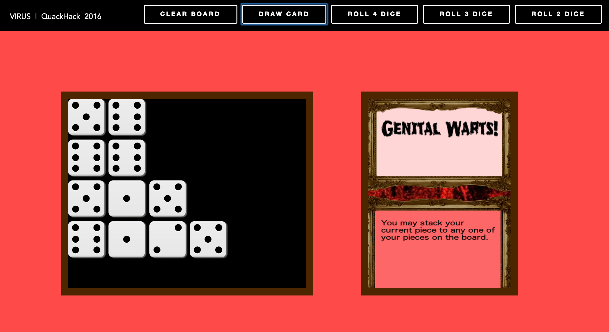

118 college students participated from 6 states (OR, WA, CA, CO, IN, MA), 14 universities and representing 16 different majors. Over 100+ high school students, community & business leaders engaged in our weekend-long event.
Team Virus had a different approach towards creating a game at the QuackHack. Make a fast-paced board game that everyone would enjoy playing. With the rise of modern console gaming, traditional board games are now only played on special occasion such as holidays.
One of the problem that we had clearly identified in many traditional board games is that they simply take too long to play, normally lasting up to an hour. Our team had concluded that we wanted to create a fast-paced board game that would combine elements of other traditional board games including Monopoly, Stratego, Risk and Settles of Caton.
While the physical board was constructed by the product design team, the coding team had created a web application for the board game. The web application uses javascript to roll different number of dices and select cards with specific probability based on the card. These card images were created using GIMP.

Being able to complete our project early allowed us to test it numerous times with the visitors at the QuackHack. I believe this was one of our main success. Even though we had thought our final product was complete, there was always room for improvements when the creators of the board game weren’t playing it. This resulted in polishing the game over and over again to create the best desired board game to our team’s satisfaction.
WE WON THIRD PLACE!
From left to right: Molly Steelhammer, Alex Lee, Michael Muir, Adam Carlton and in the center, Nick Capaldini
>>>>>>> branch1